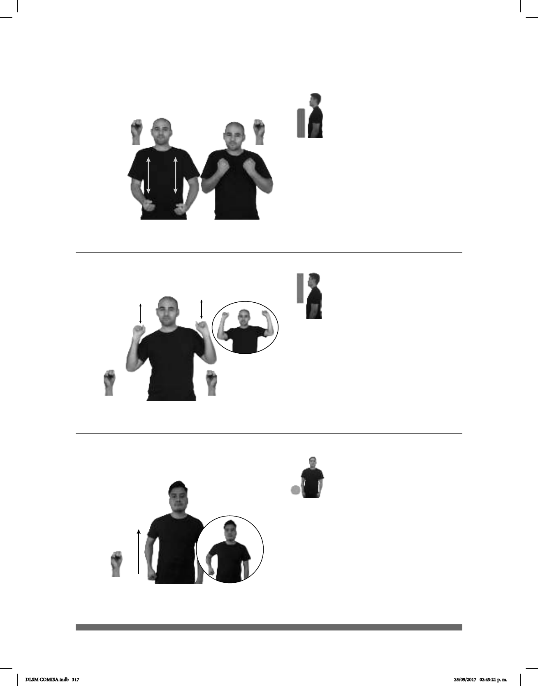

317
(S-70)
Seña: SS
S.1
Palmas hacia arriba.
De los hombros a a cabeza.
Recto de abajo hacia
arriba repetidamente.
Simula la acción de
levantar pesas.
sust. m. Acto de levantar
Seña: SM
S.1
Palma oblicua hacia
dentro y hacia abajo.
A la altura de cadera a la
cintura.
Recto.
Simula cargar una
maleta.
sust. f. Especie de caja
provista de un asa que sirve, sobre
todo en los viajes, para transportar
ropas y otros objetos.
Seña: SS
S.1
Palmas hacia arriba.
A la altura del pecho.
Los antebrazos se
Mejillas
Simula la acción de
levantar unas mancuernas.
sust. m. Acto de levantar
(S-71)
(S-72)
MAÑANA pro-YO HACER-LEVANTAR-PESAS++
Mañana haré ejercicio levantando pesas.
MAÑANA pro-YO HACER-LEVANTAR-PESAS++
Mañana haré ejercicio levantando pesas.
MALETA pro-TÚ PODER LLEVAR
Puedes llevar una maleta.
DLSM COMISA.indb 317 25/09/2017 02:45:21 p. m.